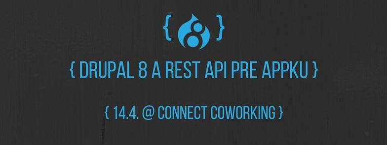

Drupal je nástroj na tvorbu webových stránok, je zadarmo, tvorený širokou komunitou. Umožňuje ľahké vytvorenie, aktualizáciu a spravovanie webstránok bez nutnosti rozsiahlych technických vedomostí. Uživateľské rozhranie Drupalu umožňuje pridávanie podstránok, navigácie, obrázkov a súborov a jeho bezpečnostné prvky umožňujú nastavenie rôznych úrovní oprávnení pre užívateľov. Ako stránka rastie, je jednoduché pridať rôznu funkcionalitu z tisícov modulov, ktoré sú dostupné na stiahnutie. Drupal je odporúčaný ako jeden z najlepších webových frameworkov a jeho použitie vysoko rastie.
Zhodnotenie roku 2016 a plány na rok 2017
2 január, 2017 - 01:10 poslal miromVšetkým vám želáme všetko dobré v roku 2017.
DrupalCampCS už budúci víkend 28-29.05 2016
20 máj, 2016 - 10:40 poslal sdaTento rok na DrupalCampeCS prinášame niekoľko noviniek a zaujímavých rečníkov.
Čo ťa čaká na DrupalCampCS tento rok?
- oddelený československý a anglický track
- 15 prednášajúcich so 14 prednáškami z 5 krajín
- Jeffrey “Jam” McGuire – jedna z najvýraznejších osobností Drupal sveta
- Marek Matulka, vývojár v SensioLabs UK, ktorý sa priamo zapája do vývoja Symfony frameworku
- Gábor Hojtsy – človek zodpovedný za super multilingual vlastnosti Drupalu
RESTful Drupal 8 - meetup - 14.4.2016
12 apríl, 2016 - 16:32 poslal sda
Aj v apríli vám prinášame meetup Drupalového Slovenska. Aprílová téma je Drupal 8 a REST API pre appku.
Prvý kontakt s Drupalom (Workshop: Základy Drupal 8)
8 február, 2016 - 11:46 poslal Matej HákačPrihlásil som sa na workshop: Základy Drupal 8 a celý týždeň som bol v očakávaní, aké to bude.
Na workshop som prišiel s riadnym časovým predstihom, ako to už mám vo zvyku, rád chodím na čas. :) Zo školenia som bol milo prekvapený.
Bolo na intrákoch Mladosť, z tých som bol prekvapený tiež. :D
Lektori boli super, keď som niečo nevedel venovali sa mi. Bolo vidieť, že Drupalom žijú.
Workshop: Základy Drupal 8
26 január, 2016 - 19:26 poslal sdaPríď si vyskúšať, ako sa robia weby pomocou Drupal 8. Počas 6 hodín vyrobíš jednoduchý informačný systém, na ktorom sa naučíš prvé kroky práce s Drupal 8.
Viac informácií o Drupal 8: https://goo.gl/mNHcnw
Pre koho je workshop určený
Workshop je určený pre každého, kto sa chce oboznámiť s Drupal 8. Nie je sa čoho obávať, všetko sa bude len naklikávať.
30.JAN - Drupal.sk migrácia - sprint
22 január, 2016 - 13:58 poslal sdaPríď nám pomôcť spraviť ďalší krok k novému portálu Drupal.sk.
PF 2016
31 december, 2015 - 17:30 poslal sdaRok 2015 končí už o pár hodín a nastal teda najvyšší čas bilancovať uplynulý rok.
Pripravované akcie v novembri
8 november, 2015 - 15:18 poslal sdaV novembri sme pripravili viacero akcií. Preto prinášame ich kompletný zoznam, aby ste o nich boli informovaní čo najskôr.
Drupal a SEO
4 november, 2015 - 09:59 poslal frankyeDrupal a SEO optimalizácia – poznámky z meetupu
28.10.2015 sme mali Drupal stretnutie na tému Drupal a SEO kde som mal prednášku.
Test hostingov - prečo, ako, čo
16 september, 2015 - 06:41 poslal sdaVýber hostingu je pre každého webového vývojára veľkou výzvou. Výberom zlého si môže pokaziť svoje meno, dobrý zase môže stáť nemalé finančné prostriedky. Preto vám Slovenská Drupal Asociácia prináša veľký test slovenských a českých hostingov.
- 1
- 2
- 3
- 4
- 5
- 6
- 7
- 8
- 9
- …
- nasledujúca ›
- posledná »